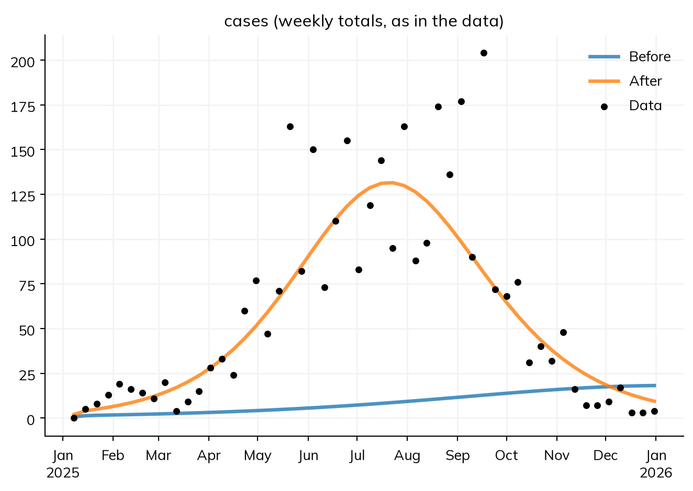
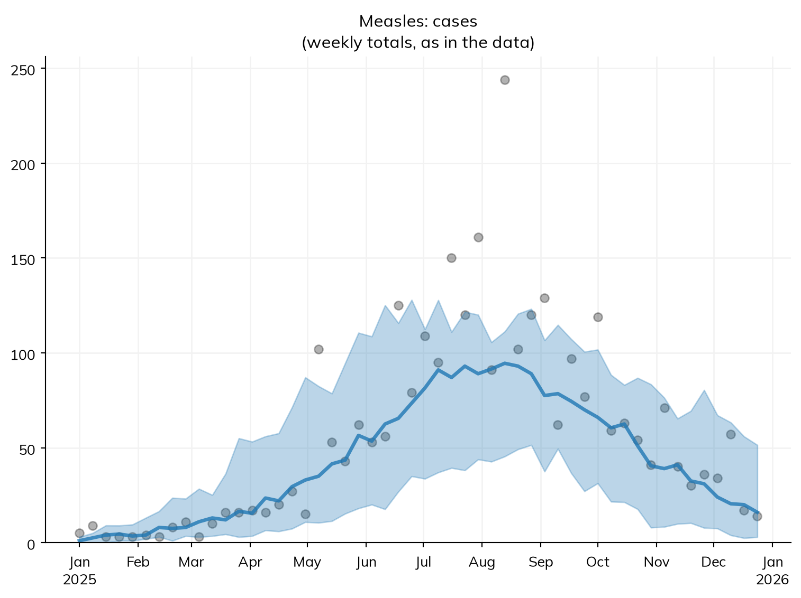
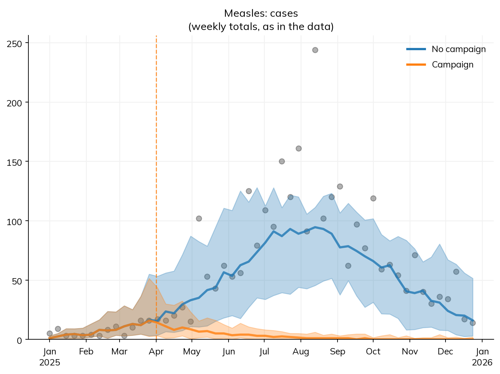

import numpy as np
import starsim as ss
import starsim.library as ssl
beta = ss.par(1.0, bounds=[0.3, 3]) # Transmission rate per day: unknown
report = ss.par(0.3, bounds=[0.05, 1]) # Fraction of cases reported: unknown
I0 = ss.par(0.0001, bounds=[1e-5, 1e-3]) # Fraction infectious at the start (10 people): unknown
cases = ss.outcome(report*ssl.Measles.onset) # Reported cases: a fraction of the onsets, added to the library's model
measles = ssl.Measles(beta=beta, dur_exp=ss.expon(ss.days(8)), dur_inf=ss.expon(ss.days(11)), cases=cases, init=dict(I=I0, R=0.9))
pars = dict(total_pop=100_000, start='2025-01-01', stop='2026-01-01')Fitting a model
Calibration is fitting a model’s parameters to data: finding the values for which the model’s results match what was observed. A model of a measles outbreak may know from the literature how long people are infectious, but not how fast measles spreads in this particular town, or what fraction of cases were reported: those are the parameters to estimate. A best fit (the single set of values that fits best) is usually enough for a first exploration; when the uncertainty in the values matters too, a posterior (the distribution of values consistent with the data) can be fitted instead.
In Starsim, calibration needs two things: which parameters are unknown, as parameters with bounds (ss.par(1.5, bounds=[0.5, 4])), and the data, attached to the sim in columns named like the results they measure. sim.fit() then fits every parameter that has bounds to every result that has data, with no function to write that puts values into the model or pulls results out.
The calibration tutorial goes through one fit step by step. Fitting methods compares the methods, Fit diagnostics covers what to check afterwards, Gradients covers posteriors and profile likelihoods of ODEs, and Optimization uses the same machinery to allocate a budget.
A first fit
The model is a measles outbreak in a town of 100,000 people, 90% of whom are immune, using the library’s measles model, ssl.Measles (S to E to I to R). The latent and infectious periods are exponential here, which keeps each fit quick. Reported cases, report times the onsets, are added to the library’s model as an outcome. Three things are unknown: the transmission rate beta, the fraction reported report, and the fraction infectious at the start, I0:
library(starsim) # Also gives ssl, Starsim's library, as in Python's import starsim.library as ssl
beta <- par(1.0, bounds = c(0.3, 3), name = "beta") # Transmission rate per day: unknown
report <- par(0.3, bounds = c(0.05, 1), name = "report") # Fraction of cases reported: unknown
I0 <- par(0.0001, bounds = c(1e-5, 1e-3), name = "I0") # Fraction infectious at the start (10 people): unknown
cases <- outcome(report * ssl$Measles$onset) # Reported cases: a fraction of the onsets, added to the library's model
measles <- ssl$Measles(beta = beta, dur_exp = ss$expon(days(8)), dur_inf = ss$expon(days(11)), cases = cases, init = list(I = I0, R = 0.9))
make_sim <- function(...) { # A sim with these settings, and any others given
Sim(measles, total_pop = 100000, start = "2025-01-01", stop = "2026-01-01", ...)
}The value given to each parameter is where the search starts, and the bounds are the range it searches. A parameter is named by its variable (I0 here), or by name=.
The data here are weekly reported cases made from an agent-based run of the same disease, with beta = 1.4, half of cases reported, 30 people infectious at the start, and counts that vary more than Poisson counts. Real data would be read from a file instead (see below):
truth = ss.Sim(measles, pars=dict(beta=1.4, report=0.5, I0=0.0003), n_agents=100_000, rand_seed=3, verbose=0, **pars)
truth.run()
data = truth.to_synthetic_data('cases', resample='week', noise=ss.nbinom(n=10)) # Weekly cases (whole weeks only, so not the last, partial one), with more variation than Poisson counts
data.head()| date | cases | |
|---|---|---|
| 0 | 2025-01-01 | 5 |
| 1 | 2025-01-08 | 9 |
| 2 | 2025-01-15 | 3 |
| 3 | 2025-01-22 | 3 |
| 4 | 2025-01-29 | 3 |
truth <- make_sim(pars = list(beta = 1.4, report = 0.5, I0 = 0.0003), n_agents = 100000, rand_seed = 3, verbose = 0)
truth$run()
data <- truth$to_synthetic_data("cases", resample = "week", noise = ss$nbinom(n = 10)) # Weekly cases (whole weeks only, so not the last, partial one), with more variation than Poisson counts, as a data frame
head(data)Attach the data to a sim of the model, and fit:
sim = ss.Sim(measles, data=data, **pars)
fit = sim.fit(method='nelder-mead')Searching on a log scale: beta, report, I0
Converged: the best two of 3 searches, from points of the scan that are apart, ended within 0.00024 of each other (objective values 0.2447 at beta=1.423, report=0.4432, I0=6.836e-05; 0.2447 at beta=1.423, report=0.443, I0=6.833e-05; 0.3294 at beta=1.663, report=0.3445, I0=1e-05; 607 evaluations)
The loss is 0.2447 at the best values and 0.9506 at the initial valuessim <- make_sim(data = data)
fit <- sim$fit(method = "nelder-mead")By default an ODE with three parameters is fitted by gradients ('l-bfgs-b'); Nelder-Mead is quicker for a model this small. The fit prints whether it converged, and (if not given a method) which method it chose and why. fit.summarize() shows the values found, with the loss before and after:
fit.summarize()Fitted 3 parameter(s) by nelder-mead, with 638 evaluations
Loss: 0.9506 before, 0.2447 after
Converged: the best two of 3 searches, from points of the scan that are apart, ended within 0.00024 of each other (objective values 0.2447 at beta=1.423, report=0.4432, I0=6.836e-05; 0.2447 at beta=1.423, report=0.443, I0=6.833e-05; 0.3294 at beta=1.663, report=0.3445, I0=1e-05; 607 evaluations)| par | initial | best | low | high | |
|---|---|---|---|---|---|
| 0 | beta | 1.0000 | 1.423224 | 0.30000 | 3.000 |
| 1 | report | 0.3000 | 0.443168 | 0.05000 | 1.000 |
| 2 | I0 | 0.0001 | 0.000068 | 0.00001 | 0.001 |
fit$summarize() # Prints the values foundA fitted initial condition is where the model has to start to match the data, not a count of who was infectious on day one. fit.plot() shows the model, summed over each week of the data, before and after the fit:
fit.plot()
The original sim is not changed. The fit holds the best values (fit.pars, which can be passed to ss.Sim(pars=...)), the calibrated sim (fit.sim, already run), and the sim with the starting values (fit.before); everything else it holds is in the appendix.
fit.parssc.obj(
beta = 1.4232242417012206,
report = 0.44316776777920575,
I0 = 6.835838505359772e-05,
)Parameters and data
Every parameter with bounds is fitted, wherever it is: a rate, a fraction, a duration (with bounds in its own unit, e.g. ss.par(ss.days(8), bounds=[5, 12])), an initial condition, a parameter of a network or intervention, a value for each level of a stratification, an array, a time series, or a setting of the sim. Each kind, and how it is named in fit.pars, is in the appendix. In addition:
pars=fits only the parameters named, keeping the others at their values:sim.fit(pars=['beta']).- Wide positive bounds (the high end 10 or more times the low end) are searched on a log scale, since going from 0.01 to 0.02 doubles transmission, but going from 0.11 to 0.12 hardly changes it. The fit says which.
- A prior,
ss.par(1.5, bounds=[0.5, 4], prior=ss.normal(2, 0.3)), is used by the methods that use likelihoods; without one, the prior is uniform over the bounds. penalty=adds a function of the values to what a best fit minimizes, e.g. to keep a curve smooth:sim.fit(penalty=lambda pars: 10*np.sum(np.diff(pars['curve'], 2)**2)).
A value that isn’t a parameter
A value set in code, such as a setting of an intervention that its constructor doesn’t take, is fitted by writing a function that sets it, with the value as a keyword argument given as ss.par, and giving the function as a module (a function given as an intervention is called at every step):
def set_testing(sim, symp_prob=ss.par(0.1, bounds=[0.01, 0.5])):
sim.interventions.testing.symp_prob = symp_prob
sim.interventions.testing.asymp_prob = symp_prob/10
sim = ss.Sim(..., interventions=[set_testing, testing], data=data)
fit = sim.fit() # Fits symp_prob, with the othersThe value is then a parameter like any other: fit.pars.symp_prob, ss.Sim(pars=dict(symp_prob=0.2)), sim.sensitivity(), and ss.parallel(sim, pars=dict(symp_prob=[0.1, 0.2])) all find it by name.
The data
The data have a time column (date, year, t, or time; an integer year is a calendar year), or dates as the index, and one column for each data series, named like the result it is compared with, here cases. A column that could match results of more than one module is named with the module, e.g. measles.cases. Any result can have data, including an analyzer’s (by_age.cancers_0_15), a nested one (hpv.genotype.cancers), or a column of a result (sis.infection.alpha).
The data need not be on the model’s time step, since each result knows what kind of quantity it is:
- A flow, like reported cases, is summed over each interval of the data, from its date to the next: each week is dated by its first day. Data dated by the end of each period (“week ending”) need their dates moved back by one period first, e.g.
data['date'] -= pd.Timedelta(days=7); Starsim warns if the last row starts a period that ends after the run, as end-labeled data often does. - A stock (like the number infectious) or a ratio (like prevalence) is compared with the model’s value at the data’s time.
- Data by calendar year are compared over the year: a flow summed, and a stock or ratio averaged.
data= takes a dataframe or a file name. ss.SimData() renames columns on the way in, and can ignore the rest:
data = ss.SimData('town_cases.csv', aliases=dict(cases='Reported cases (weekly)', date='Week starting'), ignore_extra=True)
sim = ss.Sim(measles, data=data, **pars)A column that matches no result gets a note listing the closest result names when the sim is initialized, and is an error when fitted. weights= weighs series differently, e.g. sim.fit(weights=dict(cases=1, deaths=5)); in a posterior, a weight of 5 counts the data five times over and makes the posterior too narrow, so use weights for best fits.
Which parameters matter
A parameter that the results don’t depend on can’t be fitted. sim.sensitivity() needs no data: it samples the parameters over their bounds, runs the model at each, and gives the partial rank correlation of each parameter with a summary of each result (near 1 or -1, the result moves with the parameter; near 0, it doesn’t):
sens = sim.sensitivity(n=50, verbose=False)
sens[['measles.I peak', 'measles.cases total']]| measles.I peak | measles.cases total | |
|---|---|---|
| beta | 0.886349 | 0.948395 |
| report | 0.048086 | 0.679897 |
| I0 | 0.580600 | 0.661698 |
Measuring the fit
Without a likelihood, the measure of fit is the normalized absolute error: for each data series, the mean absolute difference between model and data, divided by the mean of the data, which puts series of different sizes on one scale. loss='rmse' uses the root mean squared error instead, and loss= can be a function of the sim that returns the mismatch to minimize:
def peak_error(sim):
""" How far the model's peak week is from the observed peak, in weeks """
weekly = sim.results.measles.cases.resample('week')
return abs(weekly.values.argmax() - data.cases.values.argmax())
fit = sim.fit(loss=peak_error)A likelihood says how the data vary around the model’s value, which is the mean. It can be declared on the outcome, for every fit, or given to the fit:
cases = ss.outcome(report*ssl.Measles.onset, likelihood=ss.poisson()) # On the outcome
fit = sim.fit(likelihood=dict(cases=ss.nbinom(n=10))) # Or for one fit, by series
fit = sim.fit(likelihood=ss.nbinom(n=10)) # Or the same for every seriesThe appendix lists the likelihoods, with the data each suits. A likelihood can also be a function fn(observed, model) that returns the log-likelihood of each value; it can’t be differentiated in JAX, so the default fit then uses Nelder-Mead.
With a likelihood for every series, the fit maximizes their summed log-likelihood (for a stochastic model, an estimate of it; see below), and the methods that give a posterior can be used. A fit uses likelihoods for every series or for none: a mix, or likelihoods with loss=, is an error. A negative binomial suits reported cases, and its dispersion n (smaller is more variable) can be fitted too:
dispersion = ss.par(5, bounds=[1, 100], name='dispersion')
fit_lik = sim.fit(method='nelder-mead', likelihood=dict(cases=ss.nbinom(n=dispersion)), verbose=False)
fit_lik.table| par | initial | best | low | high | |
|---|---|---|---|---|---|
| 0 | beta | 1.0000 | 1.372814 | 0.30000 | 3.000 |
| 1 | report | 0.3000 | 0.516778 | 0.05000 | 1.000 |
| 2 | I0 | 0.0001 | 0.000094 | 0.00001 | 0.001 |
| 3 | dispersion | 5.0000 | 9.119462 | 1.00000 | 100.000 |
To score any run that has data, e.g. to compare scenarios, ss.fitting.mismatch(sim) gives the normalized absolute error (or another loss=) and ss.fitting.loglik(sim, likelihood=...) the log-likelihood (with by_series=True, for each series; with data=, against other data):
print('Normalized absolute error:', ss.fitting.mismatch(fit_lik.sim))
print('Log-likelihood:', ss.fitting.loglik(fit_lik.sim, likelihood=dict(cases=ss.nbinom(n=fit_lik.pars.dispersion))))Normalized absolute error: 0.2644874116816023
Log-likelihood: -210.99691689345516How the fit is found
By default a fit is a best fit, by a method that suits the model, which sim.fit() prints with its reason. A posterior is always asked for by name:
| The model | The default method (a best fit) | A posterior, by name |
|---|---|---|
| Deterministic (an ODE) | 'l-bfgs-b' (gradients from JAX, or by finite differences); 'nelder-mead' for one or two parameters, or when JAX can’t take the log-likelihood |
'nuts', given a likelihood for every series; 'pmcmc' if JAX can’t run the model |
| Stochastic compartmental | 'optuna' |
'pmcmc' (particle MCMC), given a likelihood for every series |
| Agent-based | 'optuna' |
'abc-smc', which needs no likelihood |
'powell', 'slsqp', and 'if2' can also be named; Fitting methods compares them all. A method’s settings are given with it: method=ss.fitting.method('nuts', draws=1000, chains=2), and a setting the method does not take is an error. A list, such as method=['optuna', 'nelder-mead'], runs each method in turn from the best values of the one before.
A stochastic model
A stochastic model gives a different result on each run, so each set of values gets a noisy score. Starsim fits it with Optuna, which tries values, scores them by running the model, and uses the scores to choose where to try next. Here is the same model as a chain binomial:
sim = ss.Sim(measles, data=data, solver='binomial', **pars)
fit = sim.fit(method='optuna', rand_seed=5)
fit.summarize()Searching on a log scale: beta, report, I0
Scoring each point by the mean of 4 runs, with fresh seeds at each point (override with method=ss.fitting.method("optuna", particles=..., n_runs=..., reseed=...))
Converged: the best score improved by 0.0% over the last quarter of the 150 trials
The mean loss of 4 runs is 0.5607 at the best values and 0.95 at the initial values
Fitted 3 parameter(s) by optuna, with 150 evaluations
Mean loss of 4 runs: 0.95 before, 0.5607 after
Converged: the best score improved by 0.0% over the last quarter of the 150 trials
spread_lower and spread_upper: the range of the best 10% of the trials, an indication of the uncertainty only, not an interval| par | initial | best | low | high | spread_lower | spread_upper | |
|---|---|---|---|---|---|---|---|
| 0 | beta | 1.0000 | 1.368283 | 0.30000 | 3.000 | 1.273969 | 1.504191 |
| 1 | report | 0.3000 | 0.412174 | 0.05000 | 1.000 | 0.315994 | 0.553046 |
| 2 | I0 | 0.0001 | 0.000128 | 0.00001 | 0.001 | 0.000070 | 0.000134 |
The search can settle anywhere in a region of similar scores (spread_lower to spread_upper, the range of the best tenth of the trials). The settings that matter most are n_trials= and n_runs= (the runs that score each trial), given as ss.fitting.method('optuna', n_trials=500); all are listed in Fitting methods. rand_seed= of sim.fit() makes the fit reproducible. Agents are fitted the same way, usually with more trials.
ss.Transition(..., noise=sigma) adds gamma white noise to a transition’s rate, for models whose rates vary at random from day to day; the particle filter, IF2, and particle MCMC all see it (see Measles in London).
fit.sim is one run with the best values; for a stochastic model, compare the data with many:
msim = ss.parallel(fit.sim, n_runs=20)msim.plot('measles.cases')
Using the fit
The calibrated sim is the starting point for scenarios: sim.new() makes a new sim from the same inputs, with whatever is given changed, and from fit.sim that includes the fitted values. Here, a catch-up campaign on 1 April that vaccinates half of those still susceptible, compared with none:
vaccination = ss.vaccinate(efficacy=0.97, who=measles.S, when='2025-04-01', coverage=0.5)
scenarios = {
'No campaign': fit.sim.new(),
'Campaign': fit.sim.new(interventions=vaccination),
}
msim = ss.parallel(scenarios, n_runs=20)
msim.plot('measles.cases')
vaccination <- vaccinate(efficacy = 0.97, who = measles$S, when = "2025-04-01", coverage = 0.5)
scenarios <- list(
"No campaign" = fit$sim$new(),
"Campaign" = fit$sim$new(interventions = vaccination)
)
msim <- parallel(scenarios, n_runs = 20)
msim$plot("measles.cases")msim.summarize().loc['measles_cases']| median | low | high | mean | std | |
|---|---|---|---|---|---|
| scenario | |||||
| No campaign | 2,340 | 1,898 | 2,488 | 2,297 | 176 |
| Campaign | 206 | 78 | 495 | 241 | 118 |
Strictly speaking, this is not the right thing to do: these runs all use the best values, so their spread is the model’s own noise, not uncertainty about the values. fit.project(scenarios, **kwargs) runs scenarios from the fit, passing kwargs to sim.new(), e.g. fit.project({'No campaign': None, 'Campaign': vaccination}, stop='2026-06-01') to forecast past the data; from a posterior, the runs carry the uncertainty in the values too (T6 has an example checked against what happened next).
Projecting from a posterior
fit.project() from a posterior runs once for each of n_runs draws (100 by default), with the same draws and seeds in every scenario:
- With
'pmcmc'or'abc-smc'on a stochastic compartmental model, each draw comes with a run (fit.trajectories) that follows the data, and by default the projection continues it from the last data point, so the scenarios differ only after it. Continued runs are kept as results only (msim.results). restart=Trueruns each draw from the start instead, for a scenario that changes something before the last data point. A scenario that can’t be continued (e.g. an intervention with a capacity, or a delivery before the last data point) is run from the start with a warning;restart=Falsemakes that an error.- For an ODE, a run at the same values is always the same, so the two are the same; see Gradients.
Fit diagnostics covers what to check before using a fit: a best value at a bound, parameters the data can’t tell apart, a lucky trial, and too few runs to judge.
Further reading
- Covasim: Calibration: fitting with Optuna in Starsim’s predecessor
- Optuna: Key features: the library that fits stochastic models here, and its plots of a search
- pomp: Getting started: likelihood-based fitting of stochastic models, including iterated filtering, in R
- Stan: User’s guide: Bayesian fitting with NUTS, the sampler used here for ODE posteriors
Appendix
What can be fitted
Every kind of value that a fit can take as a parameter, and how it is named in fit.pars (and so in pars=, ss.Sim(pars=...), and sim.sensitivity()):
| What | Given as | Named in fit.pars |
|---|---|---|
| A rate, fraction, or duration of a declared model | beta = ss.par(1.5, bounds=[0.5, 4]), used in a transition or outcome |
By its variable, beta, or its name=; with the module’s name, measles.beta, if several modules have one of that name |
| An initial condition | init=dict(I=ss.par(...)) (a fraction), or init_n=dict(I=ss.par(10, bounds=[1, 100], name='I0')) (a number); without a variable or name=, an error |
By its variable or name=, as I0 on this page |
| A value for each level of a stratification | ss.par(ss.by(age=[...]), bounds=...) |
One for each level, by its label, e.g. beta[0-14] and beta[15+]; whole in fit.pars |
| An array | ss.par(np.array([...]), bounds=[lows, highs]) |
curve[0], curve[1], … (not those whose low and high bounds are equal); whole in fit.pars |
| A time series | ss.par(ss.timeseries(days, values), bounds=...) |
By its times, beta[0], beta[14], …; whole in fit.pars |
| A parameter of a module written as code | ssl.HIV(beta=ss.par(0.01, bounds=[0.001, 0.1])) |
beta, or hiv.beta if the name is taken |
| A value in a dict parameter | cin_fn=dict(k=ss.par(0.3, bounds=[0.1, 0.5])) |
cin_fn.k |
| A modifier’s amount | ss.modify(hiv.rel_sus, multiply=ss.par(2.7, bounds=[1, 4])) |
multiply, or its name as a parameter of a declared disease |
| A parameter of a network, intervention, or other module | ss.vaccinate(coverage=ss.par(0.5, bounds=[0.2, 0.9])) |
Its name, e.g. coverage, with its module’s name if needed |
| A keyword argument of a function given as a module | def set_testing(sim, symp_prob=ss.par(...)) |
symp_prob |
| A likelihood’s own parameter | ss.nbinom(n=ss.par(5, bounds=[1, 100], name='dispersion')) |
dispersion (fitted only by a fit that uses the likelihood) |
| A setting of the sim | ss.Sim(n_agents=ss.par(5000, bounds=[1000, 20000])), fitted with a new sim for each value |
n_agents |
Likelihoods and priors
The likelihoods that likelihood= (or ss.outcome(..., likelihood=)) takes, and the data each suits. “In JAX” means the log-likelihood can be taken in JAX, as gradient-based fits and NUTS need:
| Likelihood | The model’s value is | Suits | In JAX |
|---|---|---|---|
ss.poisson() |
The mean count | Counts with no more spread than chance gives: cases or deaths, reported in full or at a steady rate | Yes |
ss.nbinom(n=...) |
The mean count; n is the dispersion (smaller means more spread), and can be an ss.par with bounds, which is then fitted |
Overdispersed counts, as most surveillance data are: reporting that varies from week to week | Yes |
ss.binom(n=...) |
The probability; n is the number of trials |
The positives among n people tested, e.g. a prevalence survey or a serosurvey |
Yes |
ss.bernoulli() |
The probability | Whether something happened, as 0 or 1, e.g. whether an outbreak was reported | Yes |
ss.normal(std=...) |
The mean; std is the standard deviation |
A continuous measure with noise of a known size, e.g. a fraction estimated with a standard error | Yes |
ss.lognormal(std=...) |
The mean; std is the standard deviation |
A positive measure whose noise grows with its size, e.g. a concentration in wastewater | Yes |
A function fn(observed, model) |
Whatever the function says: it returns the log-likelihood of each value | Anything else, e.g. a beta-binomial from SciPy, or a normal whose variance grows with the mean | No: the default fit uses Nelder-Mead; a method with gradients (or NUTS) needs require_jax=False, and runs with Python in the loop |
The priors that ss.par(..., prior=) takes. Without one, the prior is uniform over the bounds, on the value itself, even for a parameter searched on a log scale; give a parameter whose order of magnitude is uncertain a prior such as ss.lognormal():
| Prior | In JAX |
|---|---|
ss.normal(), ss.lognormal(), ss.gamma(), ss.beta_dist(), ss.expon(), ss.uniform() |
Yes |
Any other distribution that has a density (e.g. ss.weibull()) |
No: it works with the methods that run with Python in the loop |
What a fit holds
The attributes of the ss.fitting.Fit that sim.fit() returns (see ss.fitting.Fit):
| Attribute | What it is |
|---|---|
fit.pars |
The best values, which can be passed to ss.Sim(pars=...) |
fit.sim |
The calibrated sim: a copy of the original with the best values, already run |
fit.before |
The sim with the starting values, already run |
fit.table |
Each parameter’s starting value, best value, and bounds; with a posterior, also its median, 95% interval (lower, upper), rhat, and ess; with Optuna and IF2, spread_lower and spread_upper (an indication of the uncertainty, not an interval) |
fit.method |
The method used |
fit.objective, fit.objective_before |
The loss (or the negative log-likelihood, or log-posterior) at the best and starting values; for a stochastic model, an estimate; fit.measure says which |
fit.scores |
The score of the best values in each run; their spread is the run-to-run noise of a stochastic fit |
fit.converged, fit.why |
Whether the method reached its own stopping rule, and how it decided (see Fit diagnostics) |
fit.trials, fit.to_df() |
Every evaluation: the values tried, and the objective at each |
fit.samples |
With a posterior, the draws: one row each, with its chain and number |
fit.trajectories |
With 'pmcmc' or 'abc-smc' on a stochastic compartmental model, the run that goes with each draw, which fit.project() continues; None otherwise |
fit.diagnostics |
divergences (NUTS), acceptance (particle MCMC and ABC-SMC), tolerance and generations (ABC-SMC), and band (95% of the model’s values over draws from a posterior, which fit.plot() draws) |
fit.study |
With Optuna, Optuna’s study, for its plots |
fit.summarize(), fit.plot(residuals=), fit.project(scenarios, n_runs=, restart=, **kwargs) |
The table with the fit before and after; the model against the data (and the residuals); runs of scenarios from the fit |